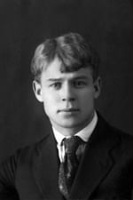

Александр Пушкин
У лукоморья дуб зелёный (отрывок из поэмы «Руслан и Людмила»)
У лукоморья дуб зелёный;
Златая цепь на дубе том:
И днём и ночью кот учёный
Всё ходит по цепи кругом;
Идёт направо — песнь заводит,
Налево — сказку говорит.
Там чудеса: там леший бродит,
Русалка на ветвях сидит;
Там на неведомых дорожкахp>
Следы невиданных зверей;
Избушка там на курьих ножках
Стоит без окон, без дверей;
Там лес и дол видений полны;
Там о заре прихлынут волны
На брег песчаный и пустой,
И тридцать витязей прекрасных
Чредой из вод выходят ясных,
И с ними дядька их морской;
Там королевич мимоходом
Пленяет грозного царя;
Там в облаках перед народом
Через леса, через моря
Колдун несёт богатыря;
В темнице там царевна тужит,
А бурый волк ей верно служит;
Там ступа с Бабою Ягой
Идёт, бредёт сама собой,
Там царь Кащей над златом чахнет;
Там русский дух… там Русью пахнет!
И там я был, и мёд я пил;
У моря видел дуб зелёный;
Под ним сидел, и кот учёный
Свои мне сказки говорил.
Читать полное произведение.

2) Сергей Есенин
Что это такое?
По пушинкам серебра,
Я с винтовкой заряженной
На охоту шел вчера.
По дорожке чистой, гладкой
Я прошел, не наследил…
Кто ж катался здесь украдкой?
Кто здесь падал и ходил?
Подойду, взгляну поближе:
Хрупкий снег изломан весь.
Здесь вот когти, дальше — лыжи…
Кто-то странный бегал здесь.
Кабы твердо знал я тайну
Заколдованным речам,
Я узнал бы хоть случайно,
Кто здесь бродит по ночам.
Из-за елки бы высокой
Подсмотрел я на кругу:
Кто глубокий след далекий
Оставляет на снегу?..
Михаил Лермонтов
Бородино
— Скажи-ка, дядя, ведь не даром
Москва, спаленная пожаром,
Французу отдана?
Ведь были ж схватки боевые,
Да, говорят, еще какие!
Недаром помнит вся Россия
Про день Бородина!
— Да, были люди в наше время,
Не то, что нынешнее племя:
Богатыри — не вы!
Плохая им досталась доля:
Немногие вернулись с поля…
Не будь на то господня воля,
Не отдали б Москвы!
Мы долго молча отступали,
Досадно было, боя ждали,
Ворчали старики:
«Что ж мы? на зимние квартиры?
Не смеют, что ли, командиры
Чужие изорвать мундиры
О русские штыки?»
И вот нашли большое поле:
Есть разгуляться где на воле!
Построили редут.
У наших ушки на макушке!
Чуть утро осветило пушки
И леса синие верхушки —
Французы тут как тут.
Забил заряд я в пушку туго
И думал: угощу я друга!
Постой-ка, брат мусью!
Что тут хитрить, пожалуй к бою;
Уж мы пойдем ломить стеною,
Уж постоим мы головою
За родину свою!
Читать полное произведение.